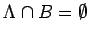
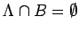

Inhalt Index DeskTop Bronstein

 Dynamische Systeme und Chaos Quantitative Beschreibung von Attraktoren Wahrscheinlichkeitsmaße auf Attraktoren Invariantes Maß
Dynamische Systeme und Chaos Quantitative Beschreibung von Attraktoren Wahrscheinlichkeitsmaße auf Attraktoren Invariantes Maß


Zum dynamischen System  auf
auf  sei die
sei die  -Algebra der BOREL-Mengen auf M und ein Maß auf . Jede Abbildung
-Algebra der BOREL-Mengen auf M und ein Maß auf . Jede Abbildung  wird als
wird als  -meßbar vorausgesetzt. Das Maß
-meßbar vorausgesetzt. Das Maß  heißt invariant unter , wenn für alle und t > 0 gilt. Ist das dynamische System
heißt invariant unter , wenn für alle und t > 0 gilt. Ist das dynamische System  invertierbar, so läßt sich die Eigenschaft eines Maßes, invariant unter dem dynamischen System zu sein, auch als ausdrücken. Das Maß
invertierbar, so läßt sich die Eigenschaft eines Maßes, invariant unter dem dynamischen System zu sein, auch als ausdrücken. Das Maß  heißt auf der BOREL-Menge
heißt auf der BOREL-Menge  konzentriert, wenn ist. Ist also
konzentriert, wenn ist. Ist also  ein Attraktor von
ein Attraktor von  und
und  ein unter
ein unter  invariantes Maß, so ist dieses auf
invariantes Maß, so ist dieses auf  konzentriert, wenn für jede BOREL-Menge B mit  ist.
konzentriert, wenn für jede BOREL-Menge B mit  ist.
Der Träger eines Maßes , bezeichnet mit supp  , ist die kleinste abgeschlossene Teilmenge von
, ist die kleinste abgeschlossene Teilmenge von  , auf der das Maß
, auf der das Maß  konzentriert ist.
konzentriert ist.
| Beispiel A |
|
Betrachtet wird auf M =[0,1] die Modulo-Abbildung (auch Shift-Abbildung) |
In diesem Fall ist mit
Anhand der Definition sieht man, daß das LEBESGUE-Maß invariant unter der Modulo-Abbildung ist. Schreibt man eine Zahl als Dualzahl , so kann man diese Darstellung mit identifizieren. Das Ergebnis der Operation läßt sich schreiben als mit ai' = ai+1, d.h., alle Ziffern ak werden um eine Stelle nach links verschoben und die erste Ziffer fällt weg.
| Beispiel B |
|
Die Abbildung mit |
heißt Zelt-Abbildung und hat ebenfalls das LEBESGUE-Maß als invariantes Maß. Der Homöomorphismus mit  überführt die Abbildung
überführt die Abbildung  aus (17.5) mit in (17.29). Damit besitzt (17.5) bei ebenfalls ein invariantes Maß, das absolut stetig ist. Für die Dichten von (17.29) und
aus (17.5) mit in (17.29). Damit besitzt (17.5) bei ebenfalls ein invariantes Maß, das absolut stetig ist. Für die Dichten von (17.29) und  von (17.5) bei gilt dabei . Hieraus ergibt sich sofort .
von (17.5) bei gilt dabei . Hieraus ergibt sich sofort .
| Beispiel C |
|
Ist x0 ein stabiler Periodenpunkt der Periode T des invertierbaren zeitdiskreten dynamischen Systems , so ist ein invariantes Wahrscheinlichkeitsmaß für . Dabei ist das in x0 konzentrierte DIRAC-Maß. |